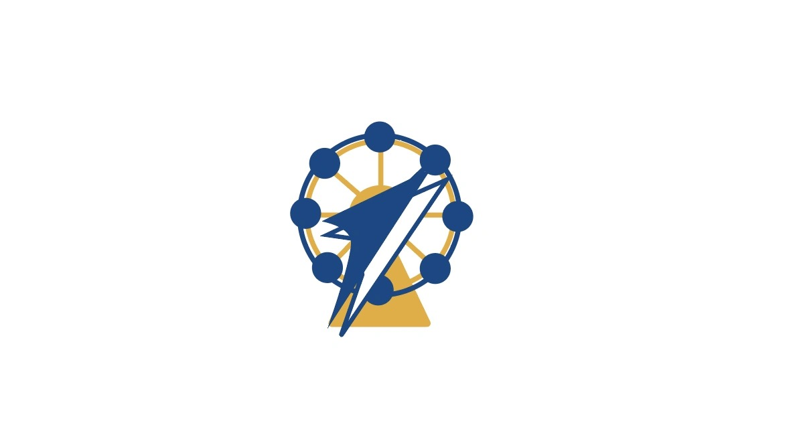

北京航空航天大学社会实践 | 扫码即可匿名提问
你好呀，陌生的朋友。
这里是一个可以悄悄提问的小角落。
也许你正对着物理课本上的某个公式发呆，想知道它和飞机飞上天到底有什么关系；也许你无数次刷到北航的推送，却不好意思开口问“这所学校真的适合我吗”；也许你只是好奇，大学里的早晨是不是真的可以睡到自然醒，社团活动是不是像电影里那样闪闪发光。
这些问题，都可以在这里留下。
关于北航的细枝末节，关于物理世界里那些让人“啊”一声的瞬间，关于从高中到大学那道不大不小的坎——只要你问，我们就会认真答。
这里没有讲台，没有标准答案，没有“这个问题太简单了”的眼神。只有一群比你早几年走过这段路的学长学姐，在某个没课的下午或安静的夜晚，打开这个页面，一字一句读你留下的困惑。
不需要登录，不需要真名。一个昵称，一个问题，就够了。
你把好奇寄存在这里，我们会好好接住。